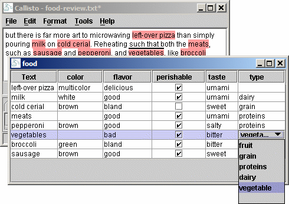

While Callisto can represent complex annotation structures, most annotation tasks can be represented with simple text spans and attributes, as defined by a DTD. As of version 1.2, Callisto can generate annotation tasks automatically from these simple DTD's.
Generated tasks will display the text in the top pane, and tables below, one table per tag type. Attributes may be modified in the tables.
These tasks are then packaged in a Java archive (jar file) which can be given to other Callisto users to annotate with the same tag definitions.
For more information about DTD's, New Mexico Tech has a good page about Constructing a DocumentType Definition
Sample DTD's food-example.dtd and generic.dtd
are in the ${CALLISTO}/data directory.
Tasks require certain meta-data to be incorporated into
Callisto. This meta-data may be declared in the DTD by
declaring ENTITIES having specific names,
with the value you wish to set.
This is a bit of a hack: technically it means that if
entity name appears in your document, it would be replaced
with the meta-data value. The risk is only slight, and if
you anticipate a problem, don't use the ENTITIES:
enter the meta-data manually when compiling the task.
The following example and table shows the meta-data required.
<!ENTITY callisto_task_name "org.mitre.example.food">
| ENTITY | Description |
|---|---|
| callisto_task_name | Unique ID for your task. This must follow reversed
Internet domain name conventions, like Java
packages, like this: com.company.annot-project.
Use alpha numeric characters, '.', and
'-', and '_'. Name
collisions within a company need to be handled by
convention within the company. There is no limit to
how long the name can be, as long as it is unique. |
| callisto_task_title | Human readable title for your task. Try to keep this short. |
| callisto_task_version | Version string to identify when changes are made to the task. |
| callisto_task_description | Free text description describing the task to users. This is currently displayed in the "Annotate New File" dialog when users select which task to annotate with. |
Within the DTD, only ELEMENT, and ATTLIST
tags are supported (with the exception of general ENTITIES
used for task meta-data).
The following example Task is
included at ${CALLISTO}/data/food-example.dtd.
ELEMENTS may currently only have #PCDATA
as their content. Callisto does not currently require tags
to being nested (like XML), or even from overlapping each
other. Attempting to declare structure, will cause an
error when the task is built.
<!ELEMENT tag-name (#PCDATA)>
Attributes may define an enumeration of values allowed for the attribute, otherwise annotators enter text freely.
Boolean attributes are defined with the enumeration (true|false)
(case insensitive, order irrelevant). This allows Callisto
to display a checkbox in the corresponding table column.
Default values are respected.
At the time, all attributes must be IMPLIED,
or have a default value set. Implied simply means that the
data need not be supplied.
<!ATTLIST tag-name attribute1 CDATA #IMPLIED
attribute2 (valA|valB|valC) "valC">
To "compile" your task for Callisto, open the "DTD Task
Compiler" from the Tools Menu. Select the DTD you have
created by typing it in, or using the browse button. It
will be parsed, and the meta-data filled in if you
inserted the correct ENTITY tags.
Click the "Compile" button, which will validate the data, and the contents of the DTD. On success, a message will be shown indicating where the tasks jar file was created. By default it is placed next to the DTD it was created from.
If the "Install Now" check-box is selected when you compile, the jar will be installed in your version of Callisto. Restart Callisto to annotate a document with your new task.
To distribute the task to colleagues, simply send the jar file created by the compile step to them via whatever means you choose. Jar files are already compressed, so attaching it to an e-mail is a good mechanism.
To install the task, your colleague must copy your task jar to one of their task directories as described in the install section of this manual.
An example DTD to show possible uses.
<!--
You may omit the ENTITY tags, as these may be entered using the
Callisto GUI, but by setting them the values will be filled in
automatically.
-->
<!-- Unique name for task disambiguation -->
<!ENTITY callisto_task_name "org.mitre.example.food">
<!-- Human readable title for display in GUI -->
<!ENTITY callisto_task_title "Food Annotation Task">
<!-- Version string -->
<!ENTITY callisto_task_version "1.0">
<!-- Optional human readable description for display in GUI -->
<!ENTITY callisto_task_description
"Annotate food and associated data">
<!-- An annotation type -->
<!ELEMENT food (#PCDATA)>
<!-- Two attributes, each with an enumeration of values, and no default -->
<!ATTLIST food type (fruit|grain|proteins|dairy|vegetable) #IMPLIED
taste (salty|sour|sweet|bitter|umami) #IMPLIED>
<!-- An attribute with any text as value -->
<!ATTLIST food color CDATA #IMPLIED>
<!-- An attribute with an enumeration of values and a default -->
<!ATTLIST food flavor (awful|bad|bland|good|delicious) "bland">
<!-- A boolean attribute and default which uses a checkbox in the table -->
<!ATTLIST food perishable (true|false) "false">
<!-- Another annotation type with a single attribute -->
<!ELEMENT consumption (#PCDATA)>
<!ATTLIST consumption timeframe (past|present|future) #IMPLIED>
Graphic components generated from the example.
